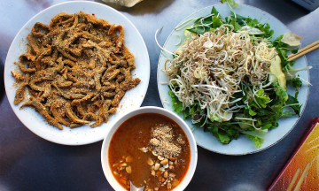

Quán bún chả cá hơn 50 năm ở Đà Nẵng
Bún chả cá Hờn truyền qua hai thế hệ, là địa chỉ quen thuộc của người dân và du khách ở Đà Nẵng và được Michelin xếp vào danh sách ''ngon, giá hợp lý''.
Nằm trong hẻm trên đường Nguyễn Chí Thanh, quận Hải Châu, quán bún chả cá Hờn đông khách hơn từ khi nhận danh hiệu Bib Gourmand - quán ngon, giá hợp lý của Michelin - hồi tháng 6.
Bún chả cá là món đặc trưng của ẩm thực miền Trung nói chung và Đà Nẵng nói riêng. Michelin giới thiệu quán Hờn hiện do thế hệ thứ hai quản lý, với bún cá thu, cá ngừ, riêu cua, chả cá chiên và hấp. "Nước dùng có vị ngọt và chua nhẹ, thoảng mùi măng", cẩm nang ẩm thực viết.
Chủ quán Ngô Thị Hờn, 70 tuổi, cho biết gia đình bà bắt đầu bán bún chả cá từ trước 1975. Ban đầu là dì và mẹ bán, sau đó bà tiếp quản. Quán khởi đầu từ gánh bán dạo khắp thành phố, rồi thuê cửa hàng ở mặt đường Nguyễn Chí Thanh, sau đó dời vào nhà riêng của vợ chồng bà trong hẻm hơn 20 năm nay.
Quán hiện có 5 nhân viên, ngoài ra còn có con dâu bà Hờn trợ giúp.
"Cá được lấy và chế biến tại các mối quen lâu năm tại Đà Nẵng và các địa phương lân cận", bà Hờn cho hay. Nước dùng thanh ngọt là điểm nổi bật, được ninh nhiều giờ từ xương cá và tôm. Trong nồi nước dùng còn có măng tươi, măng khô, kèm rau bắp cải.
Vị đặc trưng của tô bún chả cá Hờn là chua ngọt thanh. Ngoài vị chua, một vài thực khách miền Bắc lần đầu thử có thể thấy khó ăn nếu không quen với vị ngọt.
Theo nhân viên, mỗi ngày trung bình quán bán hơn 30 kg chả và các loại cá, trong đó nhiều nhất là chả cá hấp (ảnh) và chiên.
Bún chả cá tô lớn bán chạy ở Hờn, có giá 30.000 đồng, tô nhỏ 25.000 đồng, cũng gồm chả cá chiên và chả cá hấp. Ngoài ra, thực khách còn có thể chọn bún riêu, bún cá ngừ, bún cá thu... kết hợp cùng chả cá hoặc gọi riêng các phần cá hay tô đặc biệt, với giá từ 25.000 đồng đến 60.000 đồng.
Ăn kèm với bún chả cá là các loại gia vị đặc trưng miền Trung như ớt chưng, mắm cá, nước mắm, hành tím ngâm, ớt xanh và rau sống. Thực khách cũng được phục vụ trà miễn phí, tự rót ngay tại bàn.
Quán rộng khoảng 50 m2, với 7 bàn dài trong nhà và vỉa hè, đủ chỗ cùng lúc cho 50-60 người. "Vào mùa du lịch, khách đông ngồi kín, hàng bán không kịp", chồng bà Hờn cho biết, nói thêm quán đông hơn từ mùa hè vừa rồi khi nhận được danh hiệu của Michelin.
Lê Tiến Long, người Hải Phòng, hiện sống và làm việc tại Hà Nội, đi du lịch Đà Nẵng đã ghé Hờn để thưởng thức tô bún chả cá lớn. Long cho biết đây là món "phải thử" khi đến Đà Nẵng. Anh đã ăn hai lần và lần này gợi ý nhóm bạn tới.
Bún chả cá Hờn mở cửa hàng ngày từ 5h đến 22h, đông khách nhất vào buổi sáng, cuối tuần và mùa du lịch hè. Ngoài ngồi ăn tại chỗ, quán cũng bán đồ mang đi. Khách cũng có thể mua riêng chả cá chiên, chả cá hấp, được hút chân không, với giá từ 220.000 đồng đến 260.000 đồng một kg
.Quán Hờn bình dân, thân thiện. Xe máy để trước cửa quán hoặc ở vỉa hè đối diện.
Cẩm nang du lịch Đà NẵngĐà Nẵng là điểm đến du lịch nổi tiếng, nơi còn được mệnh danh là "thành phố đáng sống nhất Việt Nam". |
|
|  |
Những món ăn không nên bỏ qua khi đến Đà NẵngĐà Nẵng đang trong mùa cao điểm du lịch hè, với lễ hội pháo hoa quốc tế, những bãi biển đẹp, đa dạng hoạt động giải trí và nhiều món ngon. |
Hai ngày ăn chơi Đà Nẵng theo gợi ý từ Michelin48 giờ là vừa đủ để tắm biển, khám phá các bảo tàng, đền chùa, ẩm thực và cuộc sống của người dân ở "thành phố đáng sống nhất Việt Nam". |
|
Đà Nẵng được khách Việt 'thích nhất dịp hè'Đà Nẵng được du khách Việt tìm kiếm và đặt phòng nhiều nhất, khách gia đình, cặp đôi, hay đi một mình đều chọn điểm đến này nghỉ hè, theo Booking. |
|
Khách du mục số quốc tế mê Đà NẵngNhà sản xuất âm nhạc Mỹ Ryan Klos chuyển tới Đà Nẵng từ Đài Loan hai tháng trước để tìm cảm hứng mới và anh lập tức ấn tượng với thành phố này. |